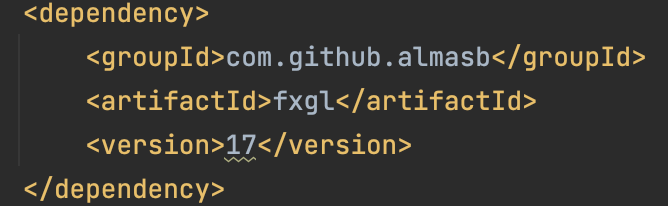
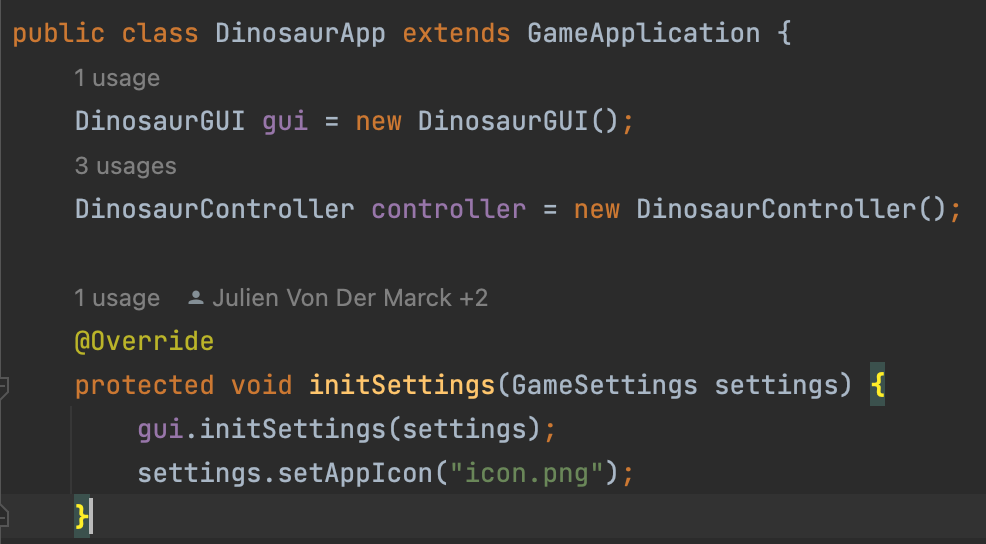
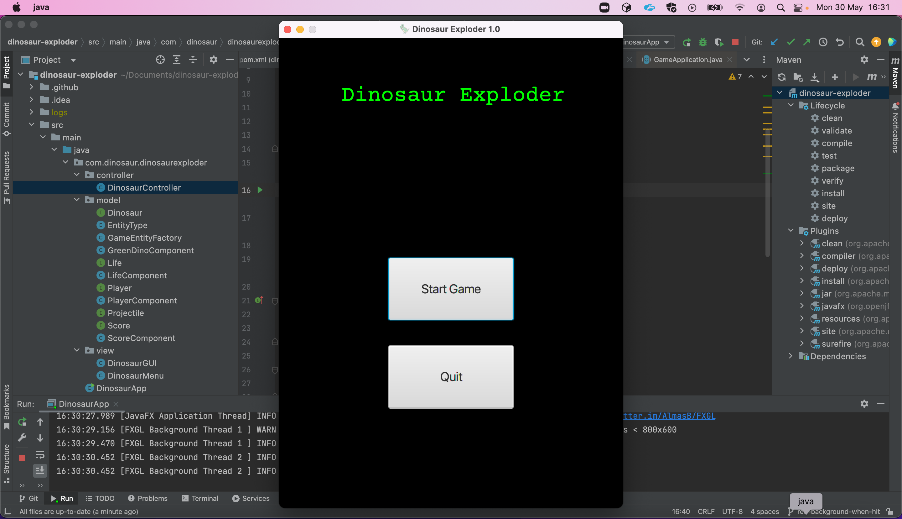

JavaFXGL: External Windows
By: Nadia Pintos Velasco
How do you run an external game window using JavaFXGL?
FXGL (FX Game Library) is a game development library that uses Java FX as the graphics framework. The open-source project I chose uses maven to build the project. To access the FXGL library, the dependency needs to be added like this:
Once you have this, to actually use FXGL you need to extend the class GameApplication and initialize your project according to your needs. However, some phases can be omitted for now. To only show an external window where your game will run you need to override the function initSettings in GameApplication.
initSettings is only called once in all the application’s lifetime. It will give you a default external window. But when you override it, you can indicate the settings you wish your window to have. For example, in my open-source project the initSettings function looks like this:
It overrides the old initSettings method and calls for the settings established in another class (DinosaurGUI), it also sets an app icon. Modifying these settings is done thanks to the GameApplication library from FXGL.
Now the window has the settings we want, but to run it we have to launch it. To do this the GameApplication library extends a method called launch where you create an instance of your game and the program runs with the arguments you pass to it. Once you run the program an external window will appear where you can see your game.
For example, my open-source project’s external game window looks like this:
